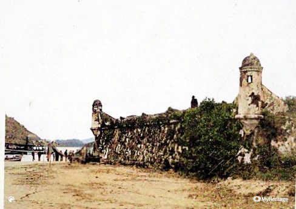

Bertioga

Na divisa do litoral sul para o litoral norte, está localizada Bertioga. Pequena cidade litorânea com a graça de Hans Staden, um alemão que foi prisioneiro dos Tupinambás nos meados do século XVI, publicou na Alemanha um dos primeiros livros de ""aventuras no Brasil". Em Bertioga pode-se ver o forte de São João e sentir como era a vida na região no início do século XVI, época em que Hans Staden esteve por aqui.

A história de Bertioga está ligada à construção do Forte de São Tiago, ordenada por Martim Afonso de Souza em 1532. Originariamente, era uma paliçada de madeira que tinha como objetivo proteger a entrada da Barra da Bertioga dos ataques indígenas e das incursões francesas. Por volta de 1557, devido aos danos causados pelas freqüentes investidas dos indígenas, a capitania de São Vicente mandou substituir paliçada por uma construção de alvenaria de pedra e cal. Nessa época, já havia se instalado um núcleo de povoamento na linha da praia, defendida pelo outeiro de Buriquioca (do tupi-guarani, "morada dos macacos"), mais tarde conhecido por Morro da Senhoria. Em 1710, o forte sofreu novos reparos e, em 1765, ganhou uma capela e seu nome passou a ser São João. Assumiu sua forma atual em 1817, com a intervenção do oficial José Felizardo. O forte centralizou o desenvolvimento de um povoado de pescadores e depois do balneário de Bertioga. Administrativamente, Bertioga tornou-se distrito do município de Santos, em 30 de novembro de 1944. Adquiriu autonomia política em 30 de dezembro de 1991.